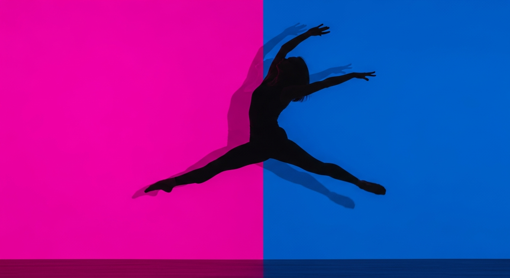

The Ballet Centre · Dubai
New Website · Design Direction
New Website · Design Direction
Mood Boards · Two Directions
Choose the feeling,
then we build the site.
Two contrasting directions for the new website, both built on the existing logo and its blue-to-purple gradient. Open each, live with it for a minute, and tell us which one is The Ballet Centre. We take the winner into the full design system and the WordPress build.

Direction A
Timeless Stage
Heritage and prestige. Ivory light, a classic serif voice, the gradient kept as a quiet accent. Calm and premium.
Open Direction A →

Direction B
The Programme
Bold and theatrical. A performing-arts season where every discipline is an act with its own saturated colour. Confident and alive.
Open Direction B →